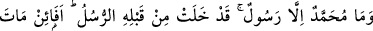
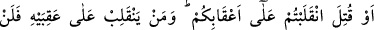
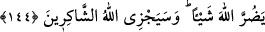

GERİSİN GERİYE Mİ
DÖNECEKSİNİZ?
144. Muhammed, ancak bir peygamberdir. Ondan önce de peygamberler gelip
geçmiştir. Şimdi o ölür ya da öldürülürse, gerisin geriye (eski dininize) mi
döneceksiniz? Kim (böyle) geri dönerse, Allah’a hiçbir şekilde zarar vermiş
olmayacaktır. Allah, şükredenleri mükâfatlandıracaktır.
Muhammed, sadece bir peygamberdir. “Muhammed” kelimesi, övgüye lâyık tüm
hasletlere sahip olan demektir. Çünkü övgüyü ancak insan-ı kâmiller hak eder.
Muhammed kelimesinin aslı olan, “tahmîd” yine övmek anlamında “hamd”den daha
üstündür. Bu sebeple tahmîdi, ancak daima kemâl sıfatlar üzere bulunanlar hak eder.
Cenâb-ı Hak, seçkin kulu olan peygamberine, kendi ismi ile aynı köklere sahip olan
Muhammed ve Ahmed adlarını ikrâm eylemiştir.
Rivâyet edilir ki: Hz. Peygamber (s.a.) 700 kişi ile birlikte Uhud dağının bir vadisine
geldiği zaman, Abdullah b. Cübeyr (r.a.)’i elli kişiden müteşekkil olan okçu birliğinin
başına geçirdi ve onlara: “Dağın bu merkezî noktasına yerleşip oklarınızla bizi
koruyun ki düşman birlikleri arkamızdan sarkmasın. Size talimat gönderinceye kadar
mevzinizi değiştirmeyin. Siz, bu mevzide kaldığınız sürece biz galip geliriz.” buyurdu.
Müşrikler gelip, Hz. Peygamber ve arkadaşları ile savaşmaya başladılar. Harp iyice
kızışınca, Peygamber Efendimiz, eline bir kılıç alıp:
“Bu kılıcı, hakkını vererek savaşmak üzere kim alacak?” buyurdu. Ebû Dücâne (r.a.)
kılıcı Hz. Peygamber’den alarak bir grup müslümanla birlikte müthiş bir savaş çıkardı.
Ali b. Ebû Tâlib (r.a.) de, kılıcı eğri büğrü oluncaya kadar savaştı. Sa’d b. Ebî Vakkas
(r.a) da savaşıyor ve Hz. Peygamber (s.a.) Sa’d’a: “Anam babam sana fedâ olsun ey
Sa’d, ok atmaya devam et!” diyordu. Sa’d ve tüm ashâb, müşriklere hamle ediyorlardı.
Nihâyet Allah müslümanlara zaferi nasip etti de müşrikleri hezimete uğrattılar.
Hz. Peygamber’in dağa yerleştirdiği okçular, müşriklerin kaçtığını görünce,
mevzilerini terkederek ganîmet toplamaya yöneldiler. Abdullah (r.a.) “Hz. Peygamber
size ne buyurmuştu? Mevzilerinizi terketmeyin!” diye bağırdıysa da onun sözüne kulak
asmadılar ve ganîmete koştular.
Abdullah b. Cübeyr sekiz okçu ile beraber kalakaldı. Bunu fırsat bilen müşrikler
safındaki Hâlid b. Velîd, 250 müşrik süvarisi ile vadiden çıkageldi. Orada kalan